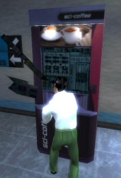

|
|
SCIENCE AND INDUSTRY MANUAL Created by PapasNewBag and BehroozWolf Other valuable documents: - Technology Tree - Advanced Guide |


- Introduction
- Basics
- Advanced
- Interface
- Gameplay Advice
An advanced guide is also available, which gives more details about the gameplay of Science & Industry:
Science and Industry is a teamplay modification for Half-Life which places players in the role of security officers at one of two competing high tech research corporations. Each of the corporations begins with three scientists, who produce research that goes toward better equipment for your company and translates directly into an increase in cash flow. The effectiveness of your scientists depends on how much time they get to work... so your job is obviously to protect them from enemy raids, and raid the enemy to slow their production. Even better, you can capture enemy scientists, bringing them back to your lab to establish an overwhelming competitive advantage! All you have to do is run to the enemy labs and hit one of their scientists over the head with your briefcase... the trick is getting back to your human resources department alive with your new "recruit"...
The twist is that each corporation begins with very low technology... so your team must choose which technologies to research to gain market share! Upgrading your weapons tech may make you more effective in battle, but you'll have a hard time escaping with a scientist if you have no armor or bionic implants. Some technologies affect your scientist productivity too... letting you gain a key cash advantage in a close game! All this can be yours... just sign on today as a security guard for Midland Carbide Labs [MCL] or Amalgamated Fluorodynamics [AFD].
Read the sections below for more detailed information.
 In order to be a valuable member of your
corporation, first you need to learn how to navigate your base. Each map has a different layout, but
all have common elements that you should be familiar with. Follow the signs located throughout your
base to find these places. If you are not sure what base you are in, look around for color clues:
blue for Midland Carbide Labs (MCL), and green for Amalagamated Flurodynamics (AFD).
In order to be a valuable member of your
corporation, first you need to learn how to navigate your base. Each map has a different layout, but
all have common elements that you should be familiar with. Follow the signs located throughout your
base to find these places. If you are not sure what base you are in, look around for color clues:
blue for Midland Carbide Labs (MCL), and green for Amalagamated Flurodynamics (AFD).
- Cloning Facilities - Players who were killed in service of their company are cloned in this part of the facility. In this room you should find health and armor chargers to refresh yourself with. When you get too wounded on the job, retreat back here to refresh and restock.
- Prototype Storage - The weapons and devices produced by your corporation for your use are stored together in the Prototype Storage room. Here there will be the experimental prototypes of your most recent developments, as well as containers with ammunition and other weaponry. In most facilities, this room is merged with the Cloning Facilities to help employees stock up easily fresh from respawn.
- Research Labs - The Research Laboratory is where your scientists work their magic. Protect it at all costs.
- Human Resources - Your administrator oversees the operations of the corporation from his office: Human Resources. When you have found something that would benefit the company (recruited scientists, stolen weapons, etc.), bring it to him.
- Computer Labs - Some maps have expensive machinery that contributes to your scientist's research capabilities. Defend this area from any would-be sabateurs.
 As a security
officer, your mission, above all else, is to keep your corporation's labs secure. When all is
going well, the scientists should be moving about in the labs, doing a lot of research you don't
understand. Depending on the layout of the map the labs may be one large room or several smaller
rooms. Your scientists will be moving about freely in the entire lab area. If you keep your
scientists happy by keeping the noise level down, they will produce more cash for your team.
As a security
officer, your mission, above all else, is to keep your corporation's labs secure. When all is
going well, the scientists should be moving about in the labs, doing a lot of research you don't
understand. Depending on the layout of the map the labs may be one large room or several smaller
rooms. Your scientists will be moving about freely in the entire lab area. If you keep your
scientists happy by keeping the noise level down, they will produce more cash for your team.
Your corporation's scientists will find it VERY hard to work if there is a lot of noise in the labs, so part of your job as a security officer is to keep your labs quiet. You keep the labs quiet by keeping weapons from being fired in the area. Nothing disrupts work more than a rocket going off near your experiments, and this applies to your weapons as well as the weapons of rival security officers.
If you fail at this, and noise does happen in your labs, you will notice the efficiency of your scientists dropping. You can tell how efficient your scientists are by looking at the atom on the bottom right part of the HUD. If all is going well, the atom will be completely white, if your scientists are disrupted, the atom will only be partially white, the rest grey. The more grey the atom is, the less efficient your scientists are. If your scientists are less efficient, they will produce less cash.
Your scientists can be killed by your opponents (they cannot, however, be killed by your team - attacking them will only disturb them and hurt their efficiency). You might think this is a good way to hurt the rival corporation, as they have to spend money to hire new scientists and their research is disrupted for a while. However, your own scientists don't particularly like to hear about their colleagues, even at rival companies, getting killed, and so their efficiency will drop each time you kill an opposing corporation's scientist. So, in general, killing your opponents scientists is a bad idea. However, if you don't have any scientists left on your research team it's open season on your oppoenent.
At the start of each map, each team will have a set small amount of cash, 3 scientists, and a few basic weapons (briefcase and colt defender). A few seconds in, each team's scientists will be ready to begin research, a voting session will open: hit your "vote" key and a voting menu will pop up with the first choices. Each member of the team will have a few seconds to place their votes, then the votes will be tallied and the next research objective will be set.
S&I Technology Tree (Full-sized chart)
 Each new technology
that you wish to research requires that you already have researched the prerequisites to that
technology before research can begin. Each time that your scientists are ready to begin a new area of
research, a voting session will open. Vote options are separated in 5 basic categories: weapons, implants,
armor, devices and process upgrades. In each category technologies that you can vote for are displayed in white,
while technologies that you don't have the prerequisites for yet, or that you have already researched, are displayed in grey.
Remember that your team begins the round with no armor, and you will
not get anything from armor rechargers until you research armor technologies.
Each new technology
that you wish to research requires that you already have researched the prerequisites to that
technology before research can begin. Each time that your scientists are ready to begin a new area of
research, a voting session will open. Vote options are separated in 5 basic categories: weapons, implants,
armor, devices and process upgrades. In each category technologies that you can vote for are displayed in white,
while technologies that you don't have the prerequisites for yet, or that you have already researched, are displayed in grey.
Remember that your team begins the round with no armor, and you will
not get anything from armor rechargers until you research armor technologies.
The speed at which each objective is discovered depends on how many scientists the team has, and how quiet they have managed to keep the research labs. If one team recruits the other team's scientists, it is quite possible that they will be several tech levels ahead of the opposition.
If you should happen to die in the line of duty, your corporation will graciously bring you back by using cloning technology. The technology does cost money (see chart below). A corporation whose security officers spend a lot of their time dying won't have much money left at all. There is also a short delay before respawning while the cloning process is completed, which can be reduced by special research options. After being cloned, you will be invulnerable for a couple of seconds, use this time to dispose of any enemies camping outside your cloning chambers.
A great way to help the productivity of your labs is to "recruit" scientists from a rival corporation. You can do this by sneaking/breaking into the rival corporation's lab, taking out your briefcase, and whacking a scientist upside the head. Unfortunately for you, the scientists will recognize your uniform as that of a rival company, and will panic and try to run away from you. Usually, it's not too hard to catch them (as long the there aren't any rival security officers about), and you can sling them over your shoulder and bring them back to the clutches of your company's Human Resources department.
 Once you get a scientist, you need
to proceed back to your corporation and find the administrator. The administrator (pictured to the
left) will "convince" the scientist that he or she would be better employed by your company, and your
team will have one more researcher. If you're having trouble finding the administrator, try following
the "Human Resources" signs which are helpfully placed in most levels.
Once you get a scientist, you need
to proceed back to your corporation and find the administrator. The administrator (pictured to the
left) will "convince" the scientist that he or she would be better employed by your company, and your
team will have one more researcher. If you're having trouble finding the administrator, try following
the "Human Resources" signs which are helpfully placed in most levels.
If you are killed while carrying a scientist, it will be dropped where you died, and will return to
the enemy labs as soon as it regains consciousness. Until it does, however, your team has the chance
to pick it up from where you dropped it and bring it back to your base anyway. Only the team that was
trying to steal a dropped scientist can pick it up, the other team just has to guard it until it
returns to their labs.
If you happen to kill an opponent who is holding technology that your corporation has not yet researched, you can grab that weapon or device and take it back to your administrator for a research bonus. In order to have him take the weapon out have it ready when you walk up to him. Each sucessfully delivered item decreases the amount of time it would normally take to research that item; this effect is cumulative. However, in order to finally access this stolen technology, you still need to tell your scientists to finish off the research on the salvaged tech by voting for that item.
If your company is ahead on weapons research, or has a device that your oppenent does not have, be wary. If you go into a battle weilding that weapon or device and are killed, your opponent will most likely jump on that opportunity to destroy your advantage over them by stealing your technology. So, if you are heavily wounded, be careful not to drop your valuable technology in a fight.
Many high tech facilities rely on expensive equipment to help their research. Although this equipment can save the company a lot of money and time, it leaves them vulnerable to sabateurs. Should you sneak into your competitors research facility, keep an eye out for computer mainframes, cloning equipment, or anything else that might upset their operations if it were lost.
In order to know what's important, read up on the map's specs in it's readme. It will display before
you are selecting your team at the beginning of a game. Read through all the critical objectives for
that map, and you should know what equipment to seek out and destroy.
The best way to destroy enemy equipment is with a bludgeoning weapon (your briefcase) or explosives. Once the equipment is destroyed, that company will start pumping time and resources into repairing it, and after a designated amount of time it will be replaced.
Some maps contain special resources that can give your company a leg up on the competition. Read the map's readme before the team selection menu and you should know what resource objectives exist for that map.
All resources are different, and will be described in detail in the readme. In general, however, they follow a pattern where you pick them up from some point (the enemy's base, or some neutral ground), and you return them back to your administrator in Human Resources. In many ways, this is is similar to delivering a scientist, but the resource can differ in many ways. For one, if you die while carrying a scientist, a teammate has a chance of getting the scientist before he/she wakes up. With resources, if you drop the resource, it's lost. Also, some resources have time limits to delivery time and other properties. Read the map's readme to be sure you know what you're getting into when you go for a resource.
Science and Industry uses separate stats to evaluate the performance of players and the performance of a team. Team score is measured by the amount of cash a team has, whereas how well a player is doing is measured by numbers of frags. Bonus frags are given for a number of situations, to help balance out defense and offence. The current team scores are always shown in the upper-right corner of your screen.
| Corporate Funds | |
| Basic corporate income rate per second: | $60 |
| Extra Produced per scientist per sec. (at max efficiency): | $15 |
| Cloning services | -$800 |
| Hiring a new scientist | -$1,000 |
| Personal Score Bonuses | |
| Killing a rival officer | 1 |
| Killing the rival Employee of the Month | 2 |
| Killing a rival officer near labs (but disturbing scientists) | 2 |
| Killing a rival officer near labs (without disturbing scientists) | 3 |
| Defending a recruiter (someone carrying scientist) | 2 |
| Killing a rival officer who is "recruiting" one of your scientists | 2 |
| Killing a rival officer who is capturing a resource. | 2 |
| Successfully recruiting a scientist | 5 |
| Salvaging weapons technology for further research | 2 |
| Destroying enemy technology (computers and other breakables) | varies |
| Capturing resources | varies |

All the items of your HUD are described below:
Personal
 The lower left of
your HUD displays information about yourself. This includes your health, armor level, and ammount of
ammunition. For obvious reasons these should be constantly monitored by you. Health and armor can be
recovered through Health and Armor chargers found in your base, or constantly through research
upgrades like Regenerative Biotechnology, or Regenerative Armor. Your ammunition can be replenished
in the ammo crates found in your Prototype Storage area of your base, or through regenerative
research upgrades like Personal Ammunition Replicators. Note that your company begins without any
armor; it must be researched. Until then armor chargers will be inactive.
The lower left of
your HUD displays information about yourself. This includes your health, armor level, and ammount of
ammunition. For obvious reasons these should be constantly monitored by you. Health and armor can be
recovered through Health and Armor chargers found in your base, or constantly through research
upgrades like Regenerative Biotechnology, or Regenerative Armor. Your ammunition can be replenished
in the ammo crates found in your Prototype Storage area of your base, or through regenerative
research upgrades like Personal Ammunition Replicators. Note that your company begins without any
armor; it must be researched. Until then armor chargers will be inactive.
Research
 The lower right of
your HUD displays information about your company. The atom in the top left of this displays
represents the efficiency your research team is working at. If the atom is greyed, then your
scientist team is not working at all. If the atom is white, then your research team is working at
100% efficiency. If the atom turns to a radioactive green then your research team is working beyond
their normal capabilities (through some enhancement, such as being mindrayed). In the example
showing, the scientists are working at full efficiency. You can check an
individual scientist's efficiency by placing your crosshair over him or her.
The lower right of
your HUD displays information about your company. The atom in the top left of this displays
represents the efficiency your research team is working at. If the atom is greyed, then your
scientist team is not working at all. If the atom is white, then your research team is working at
100% efficiency. If the atom turns to a radioactive green then your research team is working beyond
their normal capabilities (through some enhancement, such as being mindrayed). In the example
showing, the scientists are working at full efficiency. You can check an
individual scientist's efficiency by placing your crosshair over him or her.
The number next to the atom notates the number of scientists currently working in your laboratory. If you notice this number drop suddenly, one of two things has happened. Either one of your scientists has been killed, in which case you should rush to your laboratory to stop whoever killed that scientist from doing it again, or one of your scientists is being stolen by an enemy player, and you should intercept them before they get back to their administrator.
Below the atom is an icon of the item being currently researched by your scientists. Next to that is the progress bar of that particular item. As research on the item progresses, the bar fills from left to right. When it is completely white, the item is finished and the research will start on the next item.
Cash Indicator
 The upper right display shows the current cash
holdings of both corporations. This is handy for quick referency without having to go to the
scoreboard. Below the cash indicators is a countdown timer of how much time is left before the match
is over and the victor is declared.
The upper right display shows the current cash
holdings of both corporations. This is handy for quick referency without having to go to the
scoreboard. Below the cash indicators is a countdown timer of how much time is left before the match
is over and the victor is declared.
Carry Indicators
 If you are
currently carrying a scientist on your back, this is indicated with an icon above the Research HUD
information. Above the carry icon (a scientist with a bump on his head) is the name of the scientist
you are carrying.
If you are
currently carrying a scientist on your back, this is indicated with an icon above the Research HUD
information. Above the carry icon (a scientist with a bump on his head) is the name of the scientist
you are carrying.
 Resources are
notated in a similar way as scientists, even though they are handled differently. An icon to
represent the resource you are carrying appears above your Research HUD information. The name of the
resource is displayed above that icon.
Resources are
notated in a similar way as scientists, even though they are handled differently. An icon to
represent the resource you are carrying appears above your Research HUD information. The name of the
resource is displayed above that icon.
Team Status
The upper left display
lists each of your teammates, along with their current location on the map.
If a teammate is highlited
in wite, this means he is currently carrying a scientist.
 The grey highlight indicates
that this employee has just dropped a scientist.
The grey highlight indicates
that this employee has just dropped a scientist.
The yellow color means
this employee is carrying a resource.
The blue highlight shows
that this employee has just killed an enemy who was running away with one of your scientists.
Finally the red color means this
employee just died.
Keeping a eye on the Science & Industry scoreboard is essential to being able to coordinate with your teammates.

You'll note that groups are displayed here. The first two are the two corporations: Midland Carbide Labs (MCL) and Amalagamated Flurodynamics (AFD). Listed next to each company's name is the amount of money that company has earned thus far. Watch this closely, as that the company who earns the most money wins the match. The third group (Unemployed) consists of players who have yet to decide which corporation to join, and those players who would rather observe the match.
Employee of the Month
Anyone who has an "E" before their name is their corporations Employee of the Month. They
have proved themselves to be an experienced and skilled player. Listen to their words, as they are good
employees to lead your offensive and defensive maneuvers. A good Employee of the Month helps lead his
team in a firm research direction and formulates a plan for how to protect the scientists (or get
some back). The undirected team is fresh pickings for their competitor.
Llamas
If a player has a "L" before their name, beware. In order to achieve this label, they have already
been revelling in lots of "llama" behavior, which is not helpful to either your team or your
opponent. Nobody likes a llama. However, if the player "reforms" themselves after time, be nice to
them; they have seen the error of their ways.

Employees on your team who are currently carrying an enemy scientist are highlighted on the scoreboard in white. Find them and aid them in escorting the scientist back to your company's administrator. Also understand that they are most likely unable to communicate with you very well during this time, as that they will have their hands full warding off their persuit.
Resource Carriers
If one of your fellow employees is carrying a resource back to base his name will be highlighted in brown. The exact item he is carrying varies from map to map, as does the actual goal and method of collecting the resource. Be sure to read up on a maps resources (if it has any) in the map's info screen. But as with scientist carriers, it's generally best to find this person and protect them.
Now that you are familiar with the basics of Science and Industry gameplay, here are some general tips:
- Be very careful to the number of scientists your company currently has. If you have less than 3, you should focus on attacking the enemy corporation to capture them back. However if you have 4 or more you should focus on defending to keep your advantage!
- The most overlooked part of S&I by new players is the requirement for a strong defense to protect your corporation's scientists and research labs. Remember that it is much easier to protect the scientists you have than it is to steal them back from an enemy team with a strong defense. Also, defenders get the benefit of the defensive frag bonuses and are closer to their resupply areas. Working as an organized team with everyone in a defined role can keep holes from opening up in your defenses, as well as giving you a better chance to capture scientists with mass attacks.
- Vote for technologies wisely... new weapons are fun, but often having more armor or leg implants can be a greater advantage. Nearly all of the higher level technologies require the Manufacturing Process Upgrade, making it very useful. Many technologies have subtle effects that make them very useful, like the efficiency boost from Upgraded Coffee Strength or the fact that the Regeneratvie Biotechnology leads to all of the implant and biotech research topics. Listen to the more experienced players, they're better informed about what will be of the most benefit to your team. Check out the Technology Tree if you want to become one of these enlightened souls.
- Don't be a llama. Be nice, help newbies, play fair, balance teams, and above all have FUN!